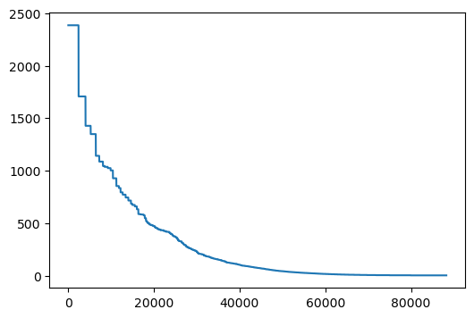
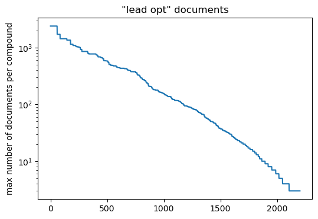
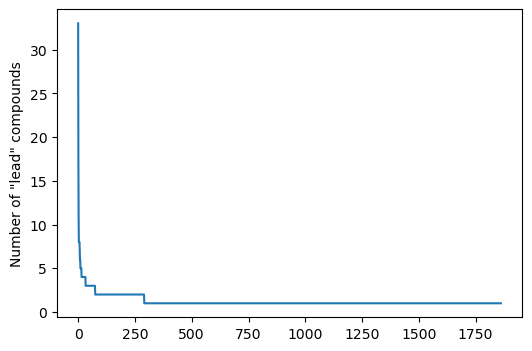
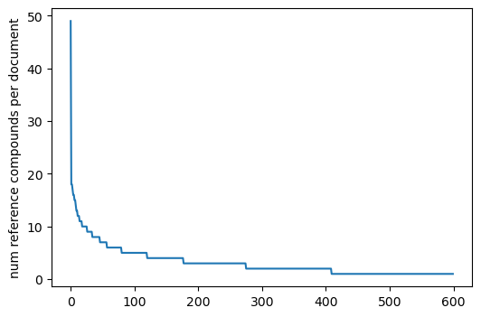

Updated 26.07.2026 to fix some of the preliminary queries. This did not affect the results.
I’ve had a long-running interest in data from lead-optimization projects in drug discovery. I talked about this recently at the 2nd CheMBL User Group Meeting. There’s a copy of my slides as well as a recording of the talk there. As part of that (and mentioned in the talk), I’m trying to come up with a collection of sets of compounds from lead-optimization papers in ChEMBL.
This post is the next step in that process.
Here’s the TL;DR on the results of the analysis:
We have information about 770 ChEMBL “lead optimization” documents (see below for the definition). These are all publications (not patents for the moment) with DOIs.
For each document we have the title and the number of “lead compounds” (see below for the definition).
The documents have between 30 and 176 unique compounds each, resulting in just over 37K non-unique compounds (non-unique because the same compound can appear in multiple documents).
Each document compound is labelled “reference” if it appears in at least 10 other documents or “local” if it appears in a smaller number of other docs.
Each document compound is labelled with the number of different assays it has values for in that document.
A “lead compound” in a document is defined as:
Present in less than 10 other documents (Note: this excludes compounds from older documents that then show up in a bunch of new docs. We can potentially solve this in a future update, but it’s not as easy as it seems)
measured in at least two binding assays *measured in at least two ADME assays
measured in at least two tox assays
A “lead optimization” document is defined to be a document with:
At least 10 different assays.
At least one “lead compound”
I think I’ve made some good progress, but I’m very happy for feedback or suggestions for improvements. One of the nice things about doing this as a blog post is that I can easily make changes and update the post (and old versions are tracked in git).
Here’s a preliminary query to see how many Ki and IC50 assays there are from patents or publications with a DOI (to make finding the document easier later) that have data for between 30 and 100 compounds. This is the type of query I’ve used before (with varying threshold values) when trying to find lead optimization sets. The goal of this post is to try and do better than this.
d =%sql postgresql://lebanon/chembl_37 \select *from (\ select assay_id,assays.chembl_id assay_chembl_id,count(distinct(molregno)) cnt,description \from activities join docs using (doc_id) join assays using(assay_id) \ where (standard_type ='Ki'or standard_type='IC50') and confidence_score=9and assay_type='B'and relationship_type='D' \and pchembl_value isnot null and ((doc_type='PATENT') or (doc_type='PUBLICATION'and doi isnot null))\ group by (assay_id,assays.chembl_id,description) order by cnt desc) tmp \ where cnt<100and cnt>30;print(f'{len(d)} assays found')
6488 assays found
To make the rest of the work more efficient, I’m going to create a bunch of extra tables in my local copy of the ChEMBL database. I’ll collect those in a schema called lead_opt:
%sql \ create schema ifnot exists lead_opt;
Now create some utility tables:
doc_assay_count: the number of assays in each patent and publication document
doc_adme_assay_count: the number of assays of type A (ADME) in each patent and publication document
doc_binding_assay_count: the number of assays of type B (binding) in each patent and publication document
doc_tox_assay_count: the number of assays of type T (toxicity) in each patent and publication document
compound_doc_count: the number of different documents each compound appears in
%sql \drop table if exists lead_opt.doc_assay_count;%sql \select doc_id,docs.chembl_id,count(distinct(assay_id)) assay_count into lead_opt.doc_assay_count \from activities join docs using (doc_id) \where ((doc_type='PATENT') or (doc_type='PUBLICATION'and doi isnot null)) \ group by (doc_id,docs.chembl_id);%sql \drop table if exists lead_opt.doc_adme_assay_count;%sql \select docs.doc_id,docs.chembl_id,count(distinct(assay_id)) assay_count into lead_opt.doc_adme_assay_count \from activities join docs using (doc_id) \ join assays using (assay_id) \where ((doc_type='PATENT') or (doc_type='PUBLICATION'and doi isnot null)) \and assay_type='A' \ group by (docs.doc_id,docs.chembl_id);%sql \drop table if exists lead_opt.doc_binding_assay_count;%sql \select docs.doc_id,docs.chembl_id,count(distinct(assay_id)) assay_count into lead_opt.doc_binding_assay_count \from activities join docs using (doc_id) \ join assays using (assay_id) \where ((doc_type='PATENT') or (doc_type='PUBLICATION'and doi isnot null)) \and assay_type='B' \ group by (docs.doc_id,docs.chembl_id);%sql \drop table if exists lead_opt.doc_tox_assay_count;%sql \select docs.doc_id,docs.chembl_id,count(distinct(assay_id)) assay_count into lead_opt.doc_tox_assay_count \from activities join docs using (doc_id) \ join assays using (assay_id) \where ((doc_type='PATENT') or (doc_type='PUBLICATION'and doi isnot null)) \and assay_type='T' \ group by (docs.doc_id,docs.chembl_id);%sql \drop table if exists lead_opt.compound_doc_count;%sql \select molregno,chembl_id compound_chembl_id,count(distinct(doc_id)) doc_count into lead_opt.compound_doc_count \from activities join chembl_id_lookup on (entity_id=molregno and entity_type='COMPOUND') \ group by (molregno, chembl_id);
Many lead-opt papers include data for literature compounds for reference. For my analysis, I’m going to be trying to remove as many of these as possible. The plan for doing this is to remove compounds that appear in a bunch of different documents.
Look at how many compounds appear in more than one document:
d =%sql \ select *from lead_opt.compound_doc_count where doc_count>1 order by doc_count desc;d =list(d)len(d)
390990
That’s a lot! How many compounds appear in more than 10 documents?
d =%sql \ select *from lead_opt.compound_doc_count where doc_count>10 order by doc_count desc;d =list(d)len(d)
6354
A smaller (but still not small) number and 10 kind of seems like a reasonable threshold; let’s go with that.
Aside: finding a cutoff for reference compounds
I originally chose a cutoff of ten (i.e. appearing in ten separate documents) to define reference compounds. I picked ten because it’s a round number, so let’s do a bit of looking at the data to see if there’s an obvious better choice.
Find the compound that appears in the most other documents within each document:
d =%sql \ select *from (select distinct on (doc_id) doc_id,molregno,doc_count as highest_count from\ lead_opt.compound_doc_count join activities using (molregno) order by doc_id,doc_count desc) sub\ order by highest_count desc;d[:5]
[(110018, 78759, 2385), (17801, 78759, 2385)]
len(d)
101065
Out of curiosity, what is that compound?
d =%sql select chembl_id,canonical_smiles,synonyms from chembl_id_lookup \ join compound_structures on (entity_id=molregno and entity_type='COMPOUND')\ join molecule_synonyms ms on (entity_id=ms.molregno and syn_type='INN') \ where entity_id=78759;d
What are the other most frequent compounds in terms of the number of documents in which they appear?
%sql select cdc.*,synonyms from lead_opt.compound_doc_count cdc \ join molecule_synonyms on (cdc.molregno=molecule_synonyms.molregno and syn_type='INN') \ order by doc_count desc limit 5;
molregno
compound_chembl_id
doc_count
synonyms
78759
CHEMBL53463
2385
Doxorubicin
241
CHEMBL8
1707
Ciprofloxacin
8062
CHEMBL428647
1427
Paclitaxel
6579
CHEMBL76
1348
Chloroquine
365189
CHEMBL374478
1141
Rifampicin
Now that I’m curious, which compounds in ChEMBL37 have the most activity values?
%sql select cdc.molregno,synonyms,count(distinct activities.activity_id) as act_count from lead_opt.compound_doc_count cdc \ join molecule_synonyms on (cdc.molregno=molecule_synonyms.molregno and syn_type='INN') \ join activities on (cdc.molregno=activities.molregno) \ group by cdc.molregno,synonyms \ order by act_count desc limit 5;
molregno
synonyms
act_count
241
Ciprofloxacin
19948
78759
Doxorubicin
15388
70140
Vancomycin
13219
8062
Paclitaxel
12984
13758
Fluconazole
10099
Two antibiotics, two chemotherapy agents, and an antifungal.
Back to looking at the document count of the most common molecule in each document:
d =%sql \ select *from (select distinct on (doc_id) doc_id,molregno,doc_count as highest_count from\ lead_opt.compound_doc_count join activities using (molregno) order by doc_id,doc_count desc) sub\ order by highest_count desc;
plt.figure(figsize=(6,4))plt.plot([x[-1] for x in d if x[-1]>1]);

I’ll pick an arbitrary, but hopefully reasonable, set of thresholds for likely “lead-opt documents”:
Have data from at least ten assays
Have data from at least two binding assays
Have data from at least two ADME assays
Have data from at least two tox assays
%sql drop table if exists lead_opt.possibles;%sql \ select * into lead_opt.possibles from\ (select doc_id,dac.chembl_id from\ lead_opt.doc_assay_count dac \ join lead_opt.doc_adme_assay_count using (doc_id) \ join lead_opt.doc_binding_assay_count using (doc_id) \ join lead_opt.doc_tox_assay_count using (doc_id) \ where dac.assay_count>10\and lead_opt.doc_adme_assay_count.assay_count>2\and lead_opt.doc_binding_assay_count.assay_count>2\and lead_opt.doc_tox_assay_count.assay_count>2\ ) tmp \ join (select doc_id,title from docs) tmp2 using (doc_id);%sql \ select count(*) from lead_opt.possibles;
count
2428
Get at the largest compound document count in each of those documents:
d =%sql \ select chembl_id,max(doc_count) max_doc_count from lead_opt.possibles \ join activities using (doc_id) \ join lead_opt.compound_doc_count cdc using (molregno) \ where cdc.doc_count>0\ group by chembl_id order by max_doc_count desc;len(d)
2428
How many of those have a max compound document count of at least 10 (this is our current threshold for a “reference compound)?
n10 =len([x for x in d if x[1]>=10])print(f'{n10}, {n10/len(d):.2f}')
1895, 0.78
78% is pretty high. We can look at the actual quantiles too:
quants =np.quantile([x[1] for x in d], [0.05,0.1,0.15,0.2])quants
array([2., 3., 4., 8.])
Plot the max compound document count for each of the documents:
plt.figure(figsize=(6, 4))plt.plot([x[1] for x in d if x[1] >1])plt.ylabel('max number of documents per compound')plt.yscale('log')plt.title('"lead opt" documents');

I don’t see an obvious point to split here, so I’m going to just stick with my original threshold of 10 for the rest of this.
Back to the main task
Let’s create a new activities table that doesn’t include any values for “reference compounds”. Here I’ll define those as compounds that appear in more than 10 documents:
%sql \drop table if exists lead_opt.filtered_activities;%sql \select * into lead_opt.filtered_activities from activities \ join lead_opt.compound_doc_count using (molregno) \ where doc_count <10;%sql \ create index ifnot exists filtered_activities_molregno_idx on lead_opt.filtered_activities(molregno);%sql \ create index ifnot exists filtered_activities_doc_id_idx on lead_opt.filtered_activities(doc_id);%sql \ create index ifnot exists filtered_activities_assay_id_idx on lead_opt.filtered_activities(assay_id);%sql select count(*) from lead_opt.filtered_activities;
count
21576240
And now let’s count the number of non-“reference compounds” in each document:
%sql \drop table if exists lead_opt.compounds_per_doc;%sql select doc_id,docs.chembl_id,count(distinct(molregno)) mol_count into lead_opt.compounds_per_doc \from lead_opt.filtered_activities join docs using (doc_id) \ group by (doc_id,docs.chembl_id) order by mol_count desc;%sql \ create index ifnot exists compounds_per_doc_doc_id_idx on lead_opt.compounds_per_doc(doc_id);
Another criteria that I’ll use to recognize lead-opt papers is that they should contain results from a number of different assays. Here’s a check to see how many documents with at least five assays contain between 30 and 100 compounds:
d =%sql \select *from (\ select docs.doc_id,docs.chembl_id doc_chembl_id,count(distinct(molregno)) cnt \from lead_opt.filtered_activities join docs using (doc_id) \ join (select doc_id from lead_opt.doc_assay_count where assay_count>5) tmp2 using (doc_id) \ join assays using(assay_id) \ where (standard_type ='Ki'or standard_type='IC50') and confidence_score=9and assay_type='B'and relationship_type='D' \and pchembl_value isnot null and ((doc_type='PATENT') or (doc_type='PUBLICATION'and doi isnot null))\ group by (docs.doc_id,docs.chembl_id) order by cnt desc) tmp \ where cnt<100and cnt>30;print(f'{len(d)} docs found')
3158 docs found
Create a few more utility tables:
doc_compound_assay_count: number of assays with activity values for each compound in each document
doc_compound_adme_assay_count: number of ADME assays with activity values for each compound in each document
doc_compound_binding_assay_count: number of binding assays with activity values for each compound in each document
doc_compound_tox_assay_count: number of tox assays with activity values for each compound in each document
%sql \drop table if exists lead_opt.doc_compound_assay_count;%sql \select doc_id,molregno,cids.chembl_id compound_chembl_id,docs.chembl_id doc_chembl_id, count(distinct(assay_id)) assay_count into lead_opt.doc_compound_assay_count \from lead_opt.filtered_activities join docs using (doc_id) join chembl_id_lookup cids on (entity_id=molregno and entity_type='COMPOUND') \ group by (doc_id,molregno,cids.chembl_id,docs.chembl_id);%sql \ create index ifnot exists doc_compound_assay_count_doc_id_idx on lead_opt.doc_compound_assay_count(doc_id);%sql \drop table if exists lead_opt.doc_compound_adme_assay_count;%sql \select docs.doc_id,molregno,cids.chembl_id compound_chembl_id,docs.chembl_id doc_chembl_id, count(distinct(assay_id)) assay_count \ into lead_opt.doc_compound_adme_assay_count \from lead_opt.filtered_activities join docs using (doc_id) \ join assays using (assay_id) \ join chembl_id_lookup cids on (entity_id=molregno and entity_type='COMPOUND') \ where assay_type='A' \ group by (docs.doc_id,molregno,cids.chembl_id,docs.chembl_id);%sql \ create index ifnot exists doc_compound_adme_assay_count_doc_id_idx on lead_opt.doc_compound_adme_assay_count(doc_id);%sql \drop table if exists lead_opt.doc_compound_binding_assay_count;%sql \select docs.doc_id,molregno,cids.chembl_id compound_chembl_id,docs.chembl_id doc_chembl_id, count(distinct(assay_id)) assay_count \ into lead_opt.doc_compound_binding_assay_count \from lead_opt.filtered_activities join docs using (doc_id) \ join assays using (assay_id) \ join chembl_id_lookup cids on (entity_id=molregno and entity_type='COMPOUND') \ where assay_type='B' \ group by (docs.doc_id,molregno,cids.chembl_id,docs.chembl_id);%sql \ create index ifnot exists doc_compound_binding_assay_count_doc_id_idx on lead_opt.doc_compound_binding_assay_count(doc_id);%sql \drop table if exists lead_opt.doc_compound_tox_assay_count;%sql \select docs.doc_id,molregno,cids.chembl_id compound_chembl_id,docs.chembl_id doc_chembl_id, count(distinct(assay_id)) assay_count \ into lead_opt.doc_compound_tox_assay_count \from lead_opt.filtered_activities join docs using (doc_id) \ join assays using (assay_id) \ join chembl_id_lookup cids on (entity_id=molregno and entity_type='COMPOUND') \ where assay_type='T' \ group by (docs.doc_id,molregno,cids.chembl_id,docs.chembl_id);%sql \ create index ifnot exists doc_compound_tox_assay_count_doc_id_idx on lead_opt.doc_compound_tox_assay_count(doc_id);
Let’s look at the compound/document combinations with the most assays:
%sql \ select *from lead_opt.doc_compound_assay_count order by assay_count desc limit 10;
%sql \ select chembl_id,doi,title from docs where doc_id=110678;
chembl_id
doi
title
CHEMBL4316593
10.1016/j.ejmech.2019.01.021
2-(2-(2,4-dioxopentan-3-ylidene)hydrazineyl)benzonitrile as novel inhibitor of receptor tyrosine kinase and PI3K/AKT/mTOR signaling pathway in glioblastoma.
According to the document page for CHEMBL4316593, there are 3298 assays in this document. Going back to the paper, most of those correspond to results from a single compound measured in a gene expression assay.
I spot checked a couple of other documents with very high assay counts and they also are lead-optimization papers that include panel assays of one sort or another.
I’d expect a lead-opt document to have data from a bunch of different assays for the lead compound (and possibly a few others). Count the number of documents that have at least one compound with data from more than ten assays:
%sql \ select count(distinct(doc_id)) from lead_opt.doc_compound_assay_count where assay_count>10;
count
33925
There are a lot of these. That’s good.
How many also have data for at least 20 non-reference compounds?
%sql \ select count(distinct(doc_id)) from lead_opt.doc_compound_assay_count \ join (select doc_id,count(distinct(molregno)) mol_count from lead_opt.filtered_activities group by (doc_id)) tmp using (doc_id) \where assay_count>10and tmp.mol_count>20;
count
14809
Still a lot.
Let’s define a “lead-opt molecule” to be a non-reference compound that has been tested in at least ten assays in the doc, with at least two binding assays, at least two ADME assays, and at least two tox assays. These are compounds that a lot of resources were expended on.
Create a table lead_opt.lead_opt_docs that collects documents and counts of “lead-opt molecules”.
%sql \ drop table if exists lead_opt.lead_opt_docs;%sql \ select * into lead_opt.lead_opt_docs from\ (select doc_id,dcac.doc_chembl_id,count(distinct(dcac.molregno)) lead_mol_count from\ lead_opt.doc_compound_assay_count dcac \ join lead_opt.compound_doc_count cdc using (molregno) \ join lead_opt.doc_adme_assay_count using (doc_id) \ join lead_opt.doc_compound_adme_assay_count using (doc_id,molregno) \ join lead_opt.doc_compound_binding_assay_count using (doc_id,molregno) \ join lead_opt.doc_compound_tox_assay_count using (doc_id,molregno) \ where dcac.assay_count>10\and cdc.doc_count<10\and lead_opt.doc_compound_adme_assay_count.assay_count>2\and lead_opt.doc_compound_binding_assay_count.assay_count>2\and lead_opt.doc_compound_tox_assay_count.assay_count>2\ group by doc_id,dcac.doc_chembl_id \ order by lead_mol_count desc) tmp \ join (select doc_id,title from docs) tmp2 using (doc_id);
How many of those docs are there?
d =%sql \ select lod.*from lead_opt.lead_opt_docs lod \ order by lead_mol_count desc;print(f'{len(d)} docs found')d[:5]
1874 docs found
[(124208, 'CHEMBL5143713', 33, 'Multitarget, Selective Compound Design Yields Potent Inhibitors of a Kinetoplastid Pteridine Reductase 1.'),
(112049, 'CHEMBL4364284', 17, 'Design, Synthesis, and Efficacy Testing of Nitroethylene- and 7-Nitrobenzoxadiazol-Based Flavodoxin Inhibitors against Helicobacter pylori Drug-Resistant Clinical Strains and in Helicobacter pylori-Infected Mice.'),
(116417, 'CHEMBL4619772', 11, 'Discovery and Structural Optimization of 4-(Aminomethyl)benzamides as Potent Entry Inhibitors of Ebola and Marburg Virus Infections.'),
(104951, 'CHEMBL4024746', 8, 'Nonpyrogenic Molecular Adjuvants Based on norAbu-Muramyldipeptide and norAbu-Glucosaminyl Muramyldipeptide: Synthesis, Molecular Mechanisms of Action, and Biological Activities in Vitro and in Vivo.'),
(137761, 'CHEMBL6153114', 8, 'Property-Based Design of Xanthine Derivatives as Potent and Orally Available TRPC4/5 Inhibitors for Depression and Anxiety.')]
There are some patents in there, get rid of them for now.
d =%sql \ select lod.*from lead_opt.lead_opt_docs lod \ join docs using (doc_id) \where doc_type='PUBLICATION'and doi isnot null\ order by lead_mol_count desc;print(f'{len(d)} docs found')d[:5]
1862 docs found
[(124208, 'CHEMBL5143713', 33, 'Multitarget, Selective Compound Design Yields Potent Inhibitors of a Kinetoplastid Pteridine Reductase 1.'),
(112049, 'CHEMBL4364284', 17, 'Design, Synthesis, and Efficacy Testing of Nitroethylene- and 7-Nitrobenzoxadiazol-Based Flavodoxin Inhibitors against Helicobacter pylori Drug-Resistant Clinical Strains and in Helicobacter pylori-Infected Mice.'),
(116417, 'CHEMBL4619772', 11, 'Discovery and Structural Optimization of 4-(Aminomethyl)benzamides as Potent Entry Inhibitors of Ebola and Marburg Virus Infections.'),
(104951, 'CHEMBL4024746', 8, 'Nonpyrogenic Molecular Adjuvants Based on norAbu-Muramyldipeptide and norAbu-Glucosaminyl Muramyldipeptide: Synthesis, Molecular Mechanisms of Action, and Biological Activities in Vitro and in Vivo.'),
(137761, 'CHEMBL6153114', 8, 'Property-Based Design of Xanthine Derivatives as Potent and Orally Available TRPC4/5 Inhibitors for Depression and Anxiety.')]
Look at the number of “lead compounds” in each document.
plt.figure(figsize=(6,4))plt.plot([x.lead_mol_count for x in d]);plt.ylabel('Number of "lead" compounds');

d[:5]
[(124208, 'CHEMBL5143713', 33, 'Multitarget, Selective Compound Design Yields Potent Inhibitors of a Kinetoplastid Pteridine Reductase 1.'),
(112049, 'CHEMBL4364284', 17, 'Design, Synthesis, and Efficacy Testing of Nitroethylene- and 7-Nitrobenzoxadiazol-Based Flavodoxin Inhibitors against Helicobacter pylori Drug-Resistant Clinical Strains and in Helicobacter pylori-Infected Mice.'),
(116417, 'CHEMBL4619772', 11, 'Discovery and Structural Optimization of 4-(Aminomethyl)benzamides as Potent Entry Inhibitors of Ebola and Marburg Virus Infections.'),
(104951, 'CHEMBL4024746', 8, 'Nonpyrogenic Molecular Adjuvants Based on norAbu-Muramyldipeptide and norAbu-Glucosaminyl Muramyldipeptide: Synthesis, Molecular Mechanisms of Action, and Biological Activities in Vitro and in Vivo.'),
(137761, 'CHEMBL6153114', 8, 'Property-Based Design of Xanthine Derivatives as Potent and Orally Available TRPC4/5 Inhibitors for Depression and Anxiety.')]
%sql \ select *from lead_opt.doc_compound_tox_assay_count \ where doc_chembl_id='CHEMBL5143713' limit 20;
That document has an awful lot of “lead compounds”, but looking at the paper, they really did make a bunch of compounds that went through a collection of different assays. The large number of “tox” assays in this case is partially due to the fact that the authors were looking for antiparasitic compounds that target microbial DHFR but not human DHFR. Some of those assays (or selectivity ratios) end up being classified as “tox” assays in ChEMBL.
Look at the docs with the least number of “lead” compounds:
d[-5:]
[(101221, 'CHEMBL3856276', 1, 'Design, Synthesis, and Biological Evaluation of Novel Tetrahydroprotoberberine Derivatives (THPBs) as Selective α1A-Adrenoceptor Antagonists.'),
(101268, 'CHEMBL3860043', 1, 'Non-Acidic Free Fatty Acid Receptor 4 Agonists with Antidiabetic Activity.'),
(101271, 'CHEMBL3860046', 1, 'Increasing metabolic stability via the deuterium kinetic isotope effect: An example from a proline-amide-urea aminothiazole series of phosphatidylinositol-3 kinase alpha inhibitors.'),
(101284, 'CHEMBL3860059', 1, "Design, Synthesis, and Biological Evaluation of First-in-Class Dual Acting Histone Deacetylases (HDACs) and Phosphodiesterase 5 (PDE5) Inhibitors for the Treatment of Alzheimer's Disease."),
(101434, 'CHEMBL3862029', 1, 'Discovery of 8-Membered Ring Sulfonamides as Inhibitors of Oncogenic Mutant Isocitrate Dehydrogenase 1.')]
Those also all sound like lead-optimization papers.
How many of those documents contain at least 30 non-reference compounds?
%sql drop table if exists lead_opt.lead_optimization_docs;%sql \ select lod.*, compounds_per_doc.mol_count into lead_opt.lead_optimization_docs \from lead_opt.lead_opt_docs lod \ join docs using (doc_id) \ join lead_opt.compounds_per_doc using (doc_id) \where doc_type='PUBLICATION'and doi isnot null\and mol_count>30;d =%sql \ select *from lead_opt.lead_optimization_docs \ order by mol_count desc;print(f'{len(d)} docs found')d[:5]
770 docs found
[(112401, 'CHEMBL4373715', 1, 'Discovery and Biological Evaluations of Halogenated 2,4-Diphenyl Indeno[1,2-<i>b</i>]pyridinol Derivatives as Potent Topoisomerase IIα-Targeted Chemotherapeutic Agents for Breast Cancer.', 172),
(119964, 'CHEMBL4765483', 2, '3,4-Dihydropyrimidin-2(1H)-ones as Antagonists of the Human A Adenosine Receptor: Optimization, Structure-Activity Relationship Studies, and Enantiospecific Recognition.', 167),
(110611, 'CHEMBL4311995', 1, 'Discovery and development of extreme selective inhibitors of the ITD and D835Y mutant FLT3 kinases.', 128),
(104326, 'CHEMBL4007421', 1, 'Discovery and Preclinical Characterization of 3-((4-(4-Chlorophenyl)-7-fluoroquinoline-3-yl)sulfonyl)benzonitrile, a Novel Non-acetylenic Metabotropic Glutamate Receptor 5 (mGluR5) Negative Allosteric Modulator for Psychiatric Indications.', 125),
(127075, 'CHEMBL5344428', 4, 'Discovery, Crystallographic Studies, and Mechanistic Investigations of Novel Phenylalanine Derivatives Bearing a Quinazolin-4-one Scaffold as Potent HIV Capsid Modulators.', 120)]
That’s a good starting point: we have 770 documents to work with.
Let’s save them:
df = d.DataFrame()import picklewithopen('./results/lead_optimization_docs.pkl','wb') as f: pickle.dump(df,f)df.to_csv('./results/lead_optimization_docs.csv',index=False)
Now let’s get the associated compounds and label them as to whether they are “reference” or “local” (i.e. non-reference) compounds:
d =%sql \ select doc_id, doc_chembl_id,molregno,el.chembl_id compound_chembl_id, compound_type, assay_count, canonical_smiles from\ (select *from\ (select doc_id,lod.doc_chembl_id,molregno,'local' compound_type, dcac.assay_count assay_count \from lead_opt.lead_optimization_docs lod \ join lead_opt.filtered_activities using (doc_id) \ join lead_opt.doc_compound_assay_count dcac using (doc_id,molregno) \ order by doc_id,molregno) \ UNION \ (select doc_id,doc_chembl_id,molregno,'reference' compound_type, assay_count \from (select doc_id,doc_chembl_id,molregno,count(distinct assay_id) assay_count from\ (select *from lead_opt.lead_optimization_docs lod \ join (select activities.doc_id,molregno from activities \except select doc_id,molregno from lead_opt.filtered_activities)\ using (doc_id)) t1 \ join activities using (doc_id,molregno) group by (doc_id,doc_chembl_id,molregno)) \ order by doc_id,molregno) \ )\ join chembl_id_lookup el on (entity_id=molregno and entity_type='COMPOUND') \ join compound_structures using (molregno) \ order by doc_id,assay_count desc,molregno;list(d)[:10]
plt.figure(figsize=(6,4))plt.plot(counts[('molregno','count')].to_list());plt.ylabel('num reference compounds per document');

I think that’s enough for now. Let’s review.
We have information about 770 ChEMBL “lead optimization” documents (see below for the definition). These are all publications (not patents for the moment) with DOIs.
For each document we have the title and the number of “lead compounds” (see below for the definition).
The documents have between 30 and 176 unique compounds each, resulting in just over 37K non-unique compounds (non-unique because the same compound can appear in multiple documents).
Each document compound is labelled “reference” if it appears in at least 10 other documents or “local” if it appears in a smaller number of other docs.
Each document compound is labelled with the number of different assays it has values for in that document.
A “lead compound” in a document is defined as:
Present in less than 10 other documents (Note: this excludes compounds from older documents that then show up in a bunch of new docs. We can potentially solve this in a future update, but it’s not as easy as it seems)
measured in at least two binding assays
measured in at least two ADME assays
measured in at least two tox assays
A “lead optimization” document is defined to be a document with: